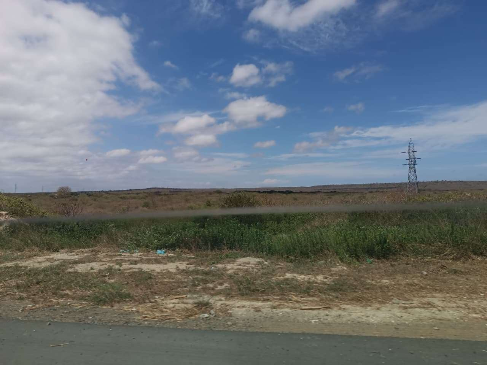

1. Contexto del Viaje
Ubicación y entorno de la experiencia
Organizamos una escapada de fin de semana hacia la playa con un grupo de 4 amigos para desconectarnos de la rutina académica y celebrar el fin del semestre.
Materiales e insumos utilizados
- Protector solar SPF 50
- Celular
- Snacks
- Protector de celular
2. Desarrollo Cronológico
Secuencia de la jornada
- Salida al amanecer desde la ciudad y llegada a la costa a las 09:00 AM.
- Salir en bote inflable y nadar en el mar durante el medio dia hasta la tarde.
- Salir a pasear a la orilla en la noche.
Registro de actividades
| Actividad | Fecha / Hora | Duración | Estado |
|---|---|---|---|
| Viaje en carretera y llegada | 21 de Julio, 07:00 AM | 3 horas | Completado |
| Nadar en el mar | 21 de Julio, 01:30 PM | 4 horas | Completado |
| Tour en bote inflable por el mar | 21 de Julio, 10:00 AM | 1.3 horas | Completado |
3. Galería y Recurso Multimedia
Fotografías de la experiencia y mapa


4. Aprendizajes de la Experiencia
Conclusiones generales
Viajar en grupo enseña sobre organización, logística y tolerancia para afrontar imprevistos en el camino.
«En el mar, se quita la mayoria del estrés, con amigos se disfruta mucho más.